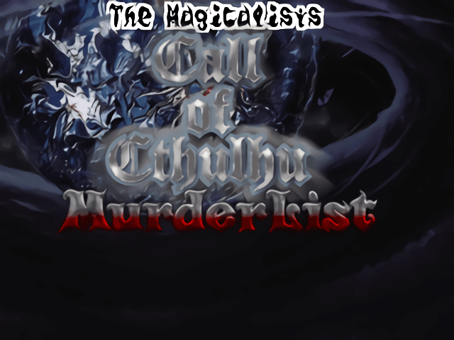

保存資料：2019-03-31の公開ページを再生しています。原HTMLと画像の載荷は保存済みです。
 |
|
| 作者：徳明 | |
| ツクール：2000 | |
| ジャンル：TRPGリプレイ見るゲ | |
| 配信/投稿：いいよ / いいよ | |
| 作者コメント： バーストⅡ達がクトゥルフ神話TRPGで遊ぶだけの見るゲです。 自分を含めた他プレイヤー達による、実際にプレイしたシナリオのリプレイとなります。 ------------------------------------------------------------------------ ……昔と少しも変わらぬ、伝説に満ちた街アーカム。 古く歪んだ腰折れ屋根の密集する街。 屋根がのしかかる屋根裏部屋には、昔、暗黒の植民地時代に イギリス国王派の兵の目を逃れて、魔女たちが潜伏していたという。 －－H.P.ラヴクラフト |
|
| 管理人コメント： 早速のエントリーに感激です |
|
| ダウンロード(22.9MB) / 感想掲示板 | |